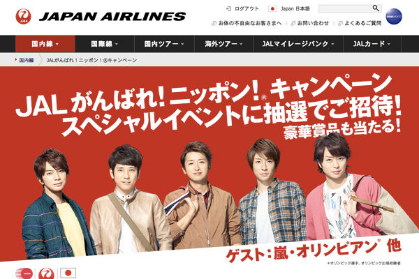

名前：
二宮 和也
生年月日：
1983.06.17
日本の男性タレント、アイドル、俳優、歌手、司会者、YouTuber。男性アイドルグループ・嵐のメンバー[3]であり、YouTuberグループ・ジャにのちゃんねるのリーダー。愛称は「ニノ」[5]。東京都葛飾区出身。ジャニーズ事務所所属[4]。
名前：
相葉 雅紀
生年月日：
1982.12.24
日本の男性タレント、司会者、俳優、歌手であり、男性アイドルグループ・嵐のメンバー。愛称は「相葉くん」「まーくん」「相葉ちゃん」 [5]。千葉県千葉市[1]花見川区[2]出身、ジャニーズ事務所所属。
名前：
松本 潤
生年月日：
1983.08.30
日本の男性タレント、アイドル、俳優、歌手、司会者、YouTuber。男性アイドルグループ・嵐のメンバー[3]であり、YouTuberグループ・ジャにのちゃんねるのリーダー。愛称は「ニノ」[5]。東京都葛飾区出身。ジャニーズ事務所所属[4]。
名前：
大野 智
生年月日：
1980.11.26
日本の男性タレント、俳優、歌手、ダンサー、芸術家。男性アイドルグループ・嵐のメンバーであり、メインヴォーカル及びリーダーを務める[1]。愛称は「大ちゃん」「リーダー」[6]。東京都三鷹市出身[7]。

名前：
櫻井 翔
生年月日：
1982.01.25
日本の男性タレント、アイドル、俳優、歌手、司会者、YouTuber。男性アイドルグループ・嵐のメンバー[3]であり、YouTuberグループ・ジャにのちゃんねるのリーダー。愛称は「ニノ」[5]。東京都葛飾区出身。ジャニーズ事務所所属[4]。
News
2022.08.27
夏フェス 2回目
2022.08.21
体験入学
2022.07.23
夏フェス 1回目
一覧へ

日本航空（JAL）は、国内線に2回搭乗すると嵐やオリンピアンが出演する「JAL Presents がんばれ！ニッポン！キャンペーン JALスペシャルイベント」への招待や、嵐の大野智さんがデザインした「JAL Fly to 2020 特別塗装機」のモデルプレーンなどが当たるキャンペーンを、きょう10月13日から2016年1月5日搭乗分まで開催している。
音楽ストリーミングサービス・Spotifyが初のオンラインライブイベント『Tokyo Super Hits Live 2020』を26日に開催することが決定し、嵐、Perfume、End of the World、[Alexandros]ら7組が生出演することが発表された。
来年2020年のオリンピックのメイン会場となる新国立競技場のオープニングイベントが来月12月21日に開催され、人気グループの「嵐」と「ドリームズ・カム・トゥルー」が出演することになった。このイベントはスポーツ、文化、音楽の3つの部門で構成され、スポーツ部門ではジャマイカのウサイン・ボルト氏も登場する。